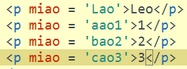
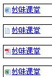
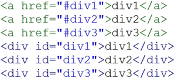
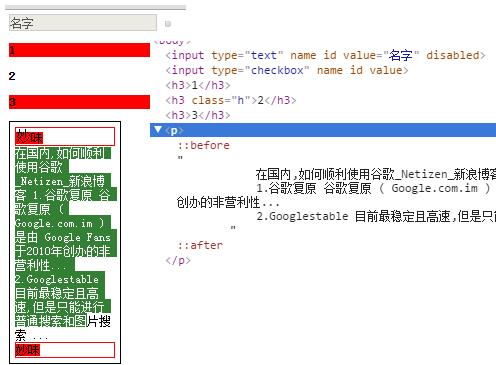
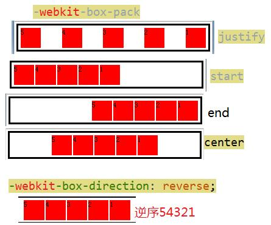
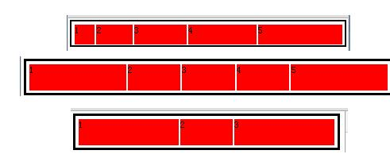
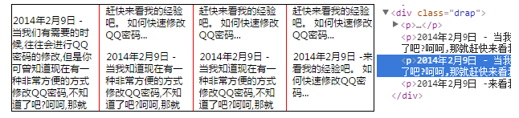
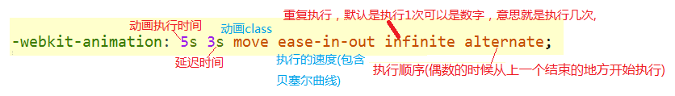

CSS3
选择器 属性选着器
/*属性选择器全部*/
/*p[miao]{background: red;}*/
/*属性选择器第一个有效*/
/*p[miao = Lao]{background: red;}*/
/*指定了开头为c的属性名 注意别有空格*/
/*p[miao^=c]{background: pink;}*/
/*指定了属性值为3结束的*/
/*p[miao$='3']{background: #0000FF;}*/
/* *号是只要包含了我指定的a这个value */
/*p[miao*='a']{background: red;}*/
/*已b已经b-开始的选择器*/
p[miao|=b]{background: red;}

属性选择器demo 文本格式包含
p{height:30px; line-height:30px; font-size:12px;border:1px solid #000;}
p a{background:url(img/w.gif) no-repeat 3px center;padding-left:20px; display:block;}
p a[href*=text]{ background-image:url(img/text.gif);}
p a[href*=pdf]{ background-image:url(img/swf.gif);}
p a[href*=exl]{ background-image:url(img/x.gif);}

结构选择器 nth-childnth-last-childnth-of-type:从前往后找 找父级下的第二个p标签 与nth-child一个是找子节点，一个是找标签nth-last-of-typefirst-childlast-child
/*p标签从第一个开始 nth-child从前往后数 找父级下的子元素*/
/*p:nth-child(1){background: red;}*/
/*奇数行*/
/*p:nth-child(odd){background: red;}*/
/*偶数*/
/*p:nth-child(even){background: red;}*/
/*倍数选择器 2n 2n+1 2n-1等等*/
/*p:nth-child(2n){background: red;}*/
/*nth-last-child从后往后数,其他和nth-child一样*/
/*p:nth-last-child(2n){background: red;}*/
/*从前往后找 找父级下的第二个p标签 其他和nth-child一样*/
/*P:nth-of-type(2){background: red;}*/
/*从后往前找 找父级下的第二个p标签 其他和nth-child一样*/
/*P:nth-last-of-type(2){background: red;}*/
/*第一个子节点*/
/*P:first-child{background: red;}*/
/*最后1个子节点*/
/*P:last-child{background: red;}*/
:first-child==:nth-child(1)
:last-child==:nth-last-child(1)
:first-of-type==nth-of-type(1)
:last-of-type==nth-last-of-type(1)
伪类 伪类：target 实现选项卡 显示哈希值对应的值
div{width: 300px;height: 200px;background: #000;
font-size: 50px;color: #fff;
line-height: 200px;font-family: "微软雅黑";
display: none;text-align: center;}
div:target{display: block;}

其他伪类 P::selection 鼠标选中文字的颜色 注意这里是2个冒号 h3:not(.h) /*not不包含:注意not里面是没有双引号的*/ P:before之前P:after之后
p{width: 200px;padding: 10px;border: 1px solid #000;position: relative;}
input{border: 1px solid #ccc;}
/*可编辑表单的颜色*/
/*input:enabled{color: blue;}*/
/*在表单有 disabled(不可编辑的时候)文字的颜色*/
/*input:disabled{color: #003399;}*/
/*文本的第一行 变红*/
P:first-line{background: red;}
/*单独设置第一个文字*/
P:first-letter{font-size: 30px;}
/*鼠标选中文字的颜色 注意这里是2个冒号*/
P::selection{background: #008000;color: #fff;}
/*在元素前面添加*/
P:before{content: "妙味";display: block;border:1px solid red;}
/*在元素后面加*/
P:after{content: "妙味";display: block;border:1px solid red;}
/*not不包含:注意not里面是没有双引号的*/
h3:not(.h){background: red;}

文本新增属性 文字浮雕效果文字模糊 文本阴影 :text-shadow: 文字排序 :direction: rtl;文字从右像左,记得配合unicode-bidi: bidi-override使用 超出显示省略号
/*body{background: url(../miaov.jpg);}*/
/*rgba 前面3个就是rgb颜色值，后面的a是透明度 */
/*#div{width: 200px;height: 200px;background:rgba(0,0,0,0.6);font-size: 30px;color: #fff;text-align: center;line-height: 200px;}*/
/*text-shadow: -5px -10px 5px #00264D,5px 3px 6px red; 参数:x轴的偏移 ，y轴的偏移,模糊的程度 ，颜色值 如果前2个的值是负数，偏移的方向相反,如果需要多层阴影需要中间用逗号隔开*/
/*h1{font-size: 100px;text-align: center;line-height: 200px;font-weight: bold;text-shadow: -5px -10px 5px #00264D,5px 3px 6px red;}*/
/*文字描边 谷歌才支持 -webkit-text-stroke: 3px red; 参数:描边的像素和颜色*/
/*h1{-webkit-text-stroke: 3px red;font-size: 100px;text-align: center;line-height: 200px;}*/
/*超出显示僧略号 white-space:nowrap;让文本显示在一行 overflow:hidden;移除隐藏 text-overflow:ellipsis;超出部分显示...*/
p{width:300px; white-space:nowrap; overflow:hidden; text-overflow:ellipsis;border:1px solid #000;font:14px/30px "宋体";}
css3布局 完全垂直居中(只兼容了谷歌其他改前缀) display:-webkit-box;类似于左浮动 -webkit-box-direction: reverse;-webkit-box-pack: center;左右居中-webkit-box-align: center;垂直居中
/*display:box;display:-webkit-box;注意有前缀才有效果其他浏览器也要加,类似于左浮动效果*/
/*盒子排序的方向-webkit-box-direction: reverse;默认是正序,,reverse是逆序*/
/*-webkit-box-pack: start;他有4个值,start是默认值相当于盒子的左浮动,end相当于右浮动,
* center元素居中,justify平均分部父级的宽度*/
/*-webkit-box-align: center; start上，end下;垂直高度的管理锤子居中*/
.box{-webkit-box-align: center;-webkit-box-pack: center;-webkit-box-direction: reverse;
display:-webkit-box;display:-moz-box;height: 200px;border: 10px solid #000;padding: 10px;}
.box div{width: 100px;height: 100px;background: red;border: 1px solid #fff;}
/*第一个div排在第二个
.box div:nth-of-type(1){-webkit-box-ordinal-group: 2;}
第二个div排在第四个
.box div:nth-of-type(2){-webkit-box-ordinal-group: 4;}
/*第三个div变成第一个顺序
.box div:nth-of-type(3){-webkit-box-ordinal-group: 1;}
/*第4个div变成第5个顺序
.box div:nth-of-type(4){-webkit-box-ordinal-group: 5;}
/*第5个div变成第3个顺序
.box div:nth-of-type(5){-webkit-box-ordinal-group: 3;}*/

盒子模型布局 -webkit-box-flex:1 /*把他的父级别分成 -box-flex:1+2+3+4+5 = 15这个多分儿，是多少就占几份儿*/ 布局demo看图
.box{/*-webkit-box-direction: reverse;*/display:-webkit-box;
display:-moz-box;height: 100px;border: 10px solid #000;padding: 10px;}
.box div{height: 100px;background: red;border: 1px solid #fff;}
/*把他的父级别分成 -box-flex:1+2+3+4+5 = 15这个多分儿，是多少就占几份儿*/
/*.box div:nth-of-type(1){-webkit-box-flex: 1;}
.box div:nth-of-type(2){-webkit-box-flex: 2}
.box div:nth-of-type(3){-webkit-box-flex: 3}
.box div:nth-of-type(4){-webkit-box-flex: 4}
.box div:nth-of-type(5){-webkit-box-flex: 5;}*/
/*盒子模型中间三块固定，两边评价分配*/
.box div:nth-of-type(1){-webkit-box-flex: 1;}
.box div:nth-of-type(2){width: 200px;}
.box div:nth-of-type(3){width: 200px;}
.box div:nth-of-type(4){width: 200px;}
.box div:nth-of-type(5){-webkit-box-flex: 1;}
/*中间1块儿固定,两边平均分配*/
/*.box div:nth-of-type(1){-webkit-box-flex: 1;}
.box div:nth-of-type(2){width: 200px;}
.box div:nth-of-type(3){-webkit-box-flex: 1;}*/

盒模型阴影 盒子阴影 box-shadow box-shadow:inset(可选) 0 0 30px 10px(可选参数) #000000;
/*盒子阴影 box-shadow:inset(可选) 0 0 30px 10px(可选参数) #000000;
* inset,有就是内阴影，没有就是外阴影（默认值） x轴的偏移 ,y轴的偏移 ,30px模糊像素,10px(可选参数就是像外扩展多少px后才开始阴影) #000模糊颜色*/
#div{box-shadow: 0 0 30px 10px #000000, 5px 5px 10px 5px blue;width: 100px;height: 100px;background: red;margin: 60px auto;}
盒子的倒影 -webkit-box-reflect:below 10px(可选元素之间的距离) 渐变（可选）;
body{background: #CCCCCC;}
/*-webkit-box-reflect:below 10px(可选元素之间的距离) 渐变（可选）;|below倒影向下|above上|left左|right右,目前只在webkit下实现了*/
img{display: block;margin: 60px auto;
-webkit-box-reflect: right 10px -webkit-linear-gradient(right,rgba(0,0,0,1) 0 ,rgba(0,0,0,0) 100%);
盒子变大变小 resize: both;注意一定要是盒子才可以img是不行的然后一定要配合overflow: auto;才可以使用
div{border: 5px solid red;width: 100px;height: 100px;margin: 60px auto;
resize: both;overflow: auto;}
怪异盒模型 box-sizing: content-box;标准 box-sizing: border-box;怪异盒模型
css3分栏布局 要给在文字的父级上 column-width 栏目宽度 column-count 栏目列数 column-gap 栏目距离 column-rule 栏目间隔线 (和boder语法一样)
/*column-width 栏目宽度 column-count 栏目列数
* column-gap 栏目距离 column-rule 栏目间隔线 (和boder语法一样)*/
.drap{width: 900px;border: 1px solid #000;
/*-webkit-column-width:250px;*/
-webkit-column-count:4;
-webkit-column-gap: 30px;
-webkit-column-rule: 1px solid red;
font:14px/30px "微软雅黑";text-indent: 2px;}

响应式布局 引用方式和媒体查询 link方式不兼容ie678 媒体查询不支持ie678
<!--大于800px的时候引用styleA.css样式-->
<link rel="stylesheet" type="text/css" href="styleA.css" media="screen and (min-width: 800px)">
-->
<!--在600到800之间的时候，引用styleB.css样式表-->
<link rel="stylesheet" type="text/css" href="styleB.css" media="screen and (min-width: 600px) and (max-width: 800px)">
-->
<!--小于600像素的时候，引用styleC.css-->
<link rel="stylesheet" type="text/css" href="styleC.css" media="screen and (max-width: 600px)">
-->
媒体查询
//大于800px的时候
@media screen and (min-width:800px) {
.wrap{border:1px solid #000; font:14px/28px "宋体";color:#000; text-indent:2em; -webkit-column-count:4; -webkit-column-gap:30px; -webkit-column-rule:1px solid #000;}
}
//400-800之间
@import url("indexc.css") screen and (min-width:400px) and (max-width:800px){
};
//小于400的时候
@media screen and (max-width:400px) {
.wrap{border:1px solid #000; font:16px/28px "宋体";color:#000; text-indent:2em; -webkit-column-count:2; -webkit-column-gap:20px; -webkit-column-rule:1px solid #000;
}
圆角 利用圆角做个风车 border-radius:几个参数表示的医生如下
/*border-radius: 20px;所有圆角 ,border-radius: 20px 30px; 20px左上和右下圆角 30px右上和左下圆角*/
/*border-radius: 20px 30px 60px; 20px左上角 |30px 右上角，左下角,60px 右下角 如果四个值，上右下左*/
/*border-radius: 100px/120px; 100px是x轴的半径,120表示y轴的半径，一般用来画椭圆*/
/*border-radius: 100px 20px 40px 60px/120px 80px 100px 10px; /前面的是x轴距离，后面的是y轴距离 */
#div{width: 100px;height: 200px;margin: 30px auto;border: 1px solid red;
border-radius: 100px 20px 40px 60px/120px 80px 100px 10px;
/*border-radius: 20px 30px 60px 80px;*/
背景尺寸 background-size: 100% 100%; background-clip: content-box; 背景裁剪
/*background-size: 100% 100%;等比缩放*/
/*background-size: cover;放大会超出*/
/*background-size: contain ;缩小会留白*/
#div{margin: 200px auto;width: 200px;height: 200px;
background: url(miaov.jpg);
/*background-size: 100% 100%;*/
border: 13px solid rgba(0,0,0,0.5);
background-clip: content-box;
多背景，用逗号隔开 利用渐变和多背景做滑动光斑 background: url(bt_blue.png),url(border.png) ;
.box{width: 300px;height: 300px;background: url(bt_blue.png),url(border.png) ;}
线性渐变 和线性渐变平铺-webkit-linear-gradient(left top ,red,blue) 从左上角开始 从红色和蓝色渐变 -webkit-repeating-linear-gradient:线性渐变平铺
/*线性渐变 -webkit-linear-gradient(left top ,red,blue) 从左上角开始 从红色和蓝色渐变,left,top可设置角度*/
/* background: -webkit-linear-gradient(60deg ,red 30px ,blue 100px);
* 从60deg角度渐变 从30px开始渐变，到100px的时候彻底变成蓝色*/
/*background: -webkit-linear-gradient(60deg ,red 0 ,blue 50%);
从60deg角度渐变 从0%开始渐变，到50%的时候彻底变成蓝色
* */
/*-webkit-repeating-linear-gradient:线性渐变平铺repeating*/
/*background: -webkit-repeating-linear-gradient(60deg ,red 10px ,blue 20px, #000 30px);
* */
.box{width: 300px;height:300px;margin: 100px auto;
/*background: -webkit-linear-gradient(60deg ,red,blue);*/
/*background: -webkit-linear-gradient(60deg ,red 30px ,blue 100px);*/
/*background: -webkit-linear-gradient(60deg ,red 0 ,blue 50%, #000 100%);*/
background: -webkit-repeating-linear-gradient(60deg ,red 10px ,blue 20px, #000 30px);
}
径向渐变 径向渐变的关键字 -webkit-radial-gradient
/*background:-webkit-radial-gradient(top,circle,red,#000);起点只能用关键字，其他和线性渐变一样,第二个参数是设置渐变的颜色分远和椭圆2个参数,默认是椭圆*/
#div{width: 200px;height: 200px;background:-webkit-radial-gradient(100px 50px,circle,red,#000);}
苹果移动开机动画 利用-webkit-background-clip:text;和-webkit-linear-gradient做苹果开机动画 background-clip:text，根据文字裁剪背景
body{text-align: center;background: #000;font: 60px/200px "微软雅黑";}
body h1{display: inline-block;color: rgba(255,255,255,0.5);
background: -webkit-linear-gradient(-30deg ,
rgba(255,255,255,0.3) 100px,
rgba(255,255,255,1) 180px,
rgba(255,255,255,1) 240px,
rgba(255,255,255,0) 300px) no-repeat -300px 0;
-webkit-background-clip:text;
transition: 3s;
}
body:hover h1{background-position: 1000px 0;}
遮罩 遮罩css -webkit-mask: url(mask.png) no-repeat;第一个参数是引入的路径，第二个是否平铺
.box {
width: 800px;
height: 600px;
background: url(miaov.jpg) no-repeat;
background-size: 100% 100%;
border: 10px solid #000;
-webkit-mask: url(mask.png) no-repeat;
transition: 1s;
}
.box:hover {
-webkit-mask-position: 100% 100%;
}
transition 贝塞尔曲线生成网站 transition: 0.5s 2s all ease-in; 0.5s动画执行的时间 all可选，2s延迟时间,all(可选需要运动的属性宽高啥的)表示的是需要动画的属性宽度等 ease-in运动速度参数可选
/*transition: 0.5s 2s all ease-in; 0.5s动画执行的时间 all可选，2s延迟时间,表示的是需要动画的属性宽度等 ease-in运动速度参数可选*/
/*transition: 2s all cubic-bezier(0.865, 1.230, 0.000, 1.650); 第三个参数可以用贝塞尔曲线代替*/
/*#div{width: 100px;height: 100px;background: red;transition: 0.5s all ease-in;}*/
/*transition: 2s width,3s background ,4s height;多样式过度 |宽度执行2s 背景3s执行完毕，高度4秒执行完毕*/
#div{width: 100px;height: 100px;background: red;
transition: 2s all cubic-bezier(0.865, 1.230, 0.000, 1.650);}
#div:hover{background: #0000FF;width: 1200px;height: 100px;}
webkitTransitionEnd transitionendcss3动画函数，在执行结束会触发 addEndremoveEnd
window.onload = function(){
var oBox=document.getElementById("div");
oBox.onclick=function()
{
this.style.width=this.offsetWidth+100+"px";
addEnd(oBox,end);
};
function end()
{
this.style.width=this.offsetWidth+100+"px";
removeEnd(this,end);
}
function addEnd(obj,fn)
{
obj.addEventListener('WebkitTransitionEnd',fn,false);
obj.addEventListener('transitionend',fn,false);
}
function removeEnd(obj,fn)
{
obj.removeEventListener('WebkitTransitionEnd',fn,false);
obj.removeEventListener('transitionend',fn,false);
}
}
普通的四种2D变换 -webkit-transform: scale(300px);缩放 -webkit-transform: translateX(300px);位移-webkit-transform: rotate(300px);旋转 -webkit-transform: skewX(300px);斜切
倾斜的导航
body{height: 400px;border: 1px solid #000000;}
li{list-style: none;}
ul li{width: 100px;height: 30px;background: red;float: left;line-height:30px;text-align: center;color: #fff;border-right: 1px solid #fff;transform: skewX(30deg);}
ul li a{display: block;text-decoration: none;transform: skewX(-30deg);}
ul li:hover{background: #003399;}
变换的基点以及transform的执行顺序 -webkit-transform-origin: right bottom; transform的执行顺序是在后面的属性先执行
#div{width: 100px;height: 100px;background: red;transition: 5s;margin: 50px auto;-webkit-transform-origin: right bottom;}
#div:hover{transform:rotate(360deg) scale(0.1);}
matrix(a,b,c,d,e,f)默认值是1,0,0,1,0,0矩阵有6个值 -->位移xy: e f 缩放a d(现代浏览器) 斜切XY-->c,b 旋转abcd 兼容ie678的方式:progid:DXImageTransform.Microsoft.Matrix：注意里面的顺序是acbd
matrix(a,b,c,d,e,f); progid:DXImageTransform.Microsoft.Matrix( M11= 1, M12= 0, M21= 0 , M22=1,SizingMethod='auto expand'); Matrix( M11= a, M12= c, M21= b , M22=d,SizingMethod='auto expand'); 位移: x:e+disX y:f+disY 缩放: x轴缩放 a=x*a c=x*c; y轴缩放 b=y*b d=y*d; x轴斜切: c=Math.tan(xDeg/180*Math.PI) y轴斜切: b=Math.tan(yDeg/180*Math.PI) //旋转 a=Math.cos(deg/180*Math.PI); b=Math.sin(deg/180*Math.PI); c=-Math.sin(deg/180*Math.PI); d=Math.cos(deg/180*Math.PI);
var oBox=document.getElementById("box"); oBox.onclick=function() { oBox.style.WebkitTransform="matrix(0.87,0.5,-0.5,0.87,0,0)"; oBox.style.MozTransform="matrix(0.87,0.5,-0.5,0.87,0,0)"; oBox.style.transform="matrix(0.87,0.5,-0.5,0.87,0,0)"; oBox.style.filter="progid:DXImageTransform.Microsoft.Matrix( M11= 0.87, M12= -0.5, M21= 0.5 , M22=0.87,SizingMethod='auto expand')"; alert(this.offsetWidth); }
iE下基点修正的旋转函数 toRotate(操作的DOM,旋转的角度) 修改矩阵的abcdef点 toMatrix（dom，abcdef）
注意#box是.box的子集，绝对定位的
.box{width:100px;height:100px;margin:30px auto; position:relative;border:1px solid #000;}
#box{width:100px;height:100px;background:red; position:absolute;left:0;top:0;}
var oBox=document.getElementById("box");
var iDeg=0;
setInterval(function(){
iDeg++;
toRotate(oBox,iDeg);
},30);
//旋转角度的兼容函数(改变ie基点为中心点)
function toRotate(obj,iDeg)
{
var a=Math.round(Math.cos(iDeg/180*Math.PI)*100)/100;
var b=Math.round(Math.sin(iDeg/180*Math.PI)*100)/100;
var c=-b;
var d=a;
obj.style.WebkitTransform="matrix("+a+","+b+","+c+","+d+",0,0)";
obj.style.MozTransform="matrix("+a+","+b+","+c+","+d+",0,0)";
obj.style.transform="matrix("+a+","+b+","+c+","+d+",0,0)";
obj.style.filter="progid:DXImageTransform.Microsoft.Matrix( M11="+a+", M12= "+c+", M21= "+b+" , M22="+d+",SizingMethod='auto expand')";
//修正ie下基点的left和top(中心点)
obj.style.left=(obj.parentNode.offsetWidth-obj.offsetWidth)/2+"px";
obj.style.top=(obj.parentNode.offsetHeight-obj.offsetHeight)/2+"px";
}
//修改矩阵下所以的abcdef的函数
function toMatrix(obj,a,b,c,d,e,f)
{
obj.style.WebkitTransform="matrix("+a+","+b+","+c+","+d+","+e+","+f+")";
obj.style.MozTransform="matrix("+a+","+b+","+c+","+d+","+e+","+f+")";
obj.style.transform="matrix("+a+","+b+","+c+","+d+",0,0)";
obj.style.filter="progid:DXImageTransform.Microsoft.Matrix( M11="+a+", M12= "+c+", M21= "+b+" , M22="+d+",SizingMethod='auto expand')";
}
3D空间和变换的视点（景深，就是人站在那个角度看这个Dom）transform-style: preserve-3d;把这个空间变成3D空间 perspective: 300px;视点 perspective-origin: left top;景深基点（3D的视角）
#div{width: 200px;height: 200px;border: 1px solid #000000;margin: 200px auto;transform-style: preserve-3d;perspective: 300px;}
.box{width: 100px;height: 100px;background: red;margin: 50px auto;transition: 2s;}
#div:hover .box{transform: rotateY(180deg);}
关键帧动画 -webkit-animation: 5s 3s move ease-in-out infinite alternate;:动画执行时间，动画延迟时间 ,执行的关键帧class,执行过程中的顺序,重复执行，执行顺序(偶数的时候从上一个结束的地方开始执行)
#drap{width: 300px;height: 300px;border: 1px solid #000000;position: relative;}
.box{height: 100px;width: 100px;background: red;position: absolute;top: 0;
animation: 5s 3s move ease-in-out infinite alternate;
left: 0;}
@-webkit-keyframes move{
0%{
top: 0;
left: 0;
}
25%{
top: 0;
left: 200px;
}
50%{
top: 200px;
left: 200px;
}
75%{
top: 200px;
left: 0px;
}
100%{
top: 0;
left: 0;
}
}

结束css3动画 animation-play-state: paused;默认是不停止的 paused 停止 监听css3关键帧动画结束的函数
/*停止css3动画*/
#drap ul:hover{animation-play-state: paused;}
//监听css3关键帧结束的函数
function endCss (obj,fn){
obj.addEventListener("webkitAnimationEnd",fn,false);
obj.addEventListener("animationEnd",fn,false);
}